Practical advice on cameras, package theft, and protecting your property — from the Tech Secure 360 team in Los Angeles.
Package theft spiked again this year. Here are seven things that actually deter porch pirates — and what to do if you get hit.
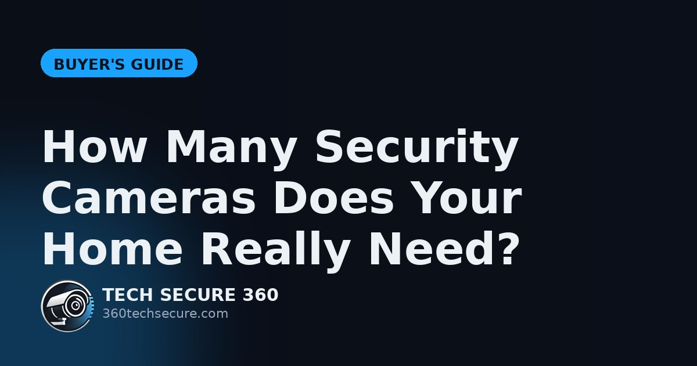
More cameras isn't always better. Here's a simple way to land on the right number for your home.
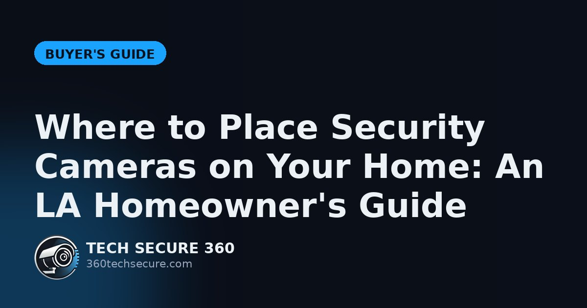
Cameras only work if they're pointed at the right places. Here's exactly where to put them — and the spots people always miss.
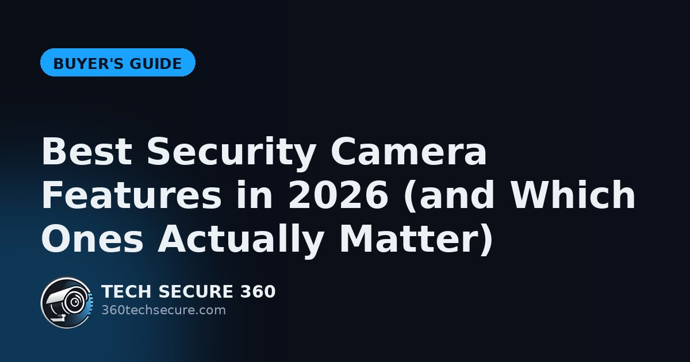
Specs sheets are full of buzzwords. Here's which camera features are worth paying for — and which are marketing.
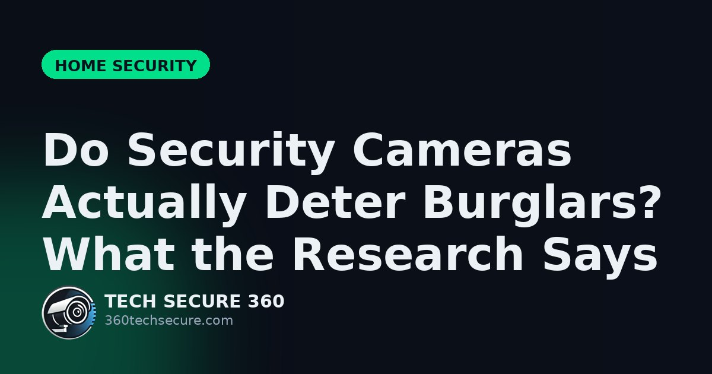
Cameras are everywhere now — but do they actually stop break-ins? Here's what the evidence shows.
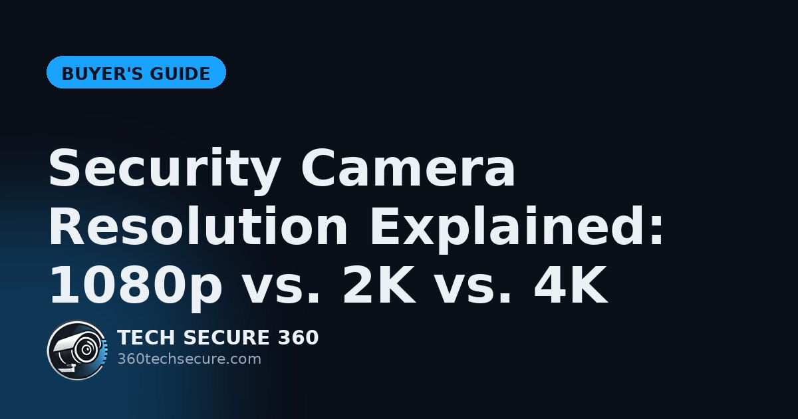
1080p, 2K, 4K — what's the real difference for security footage, and when is higher worth the cost?
A storefront needs more than a single camera. Here's how to actually protect a small business in LA.
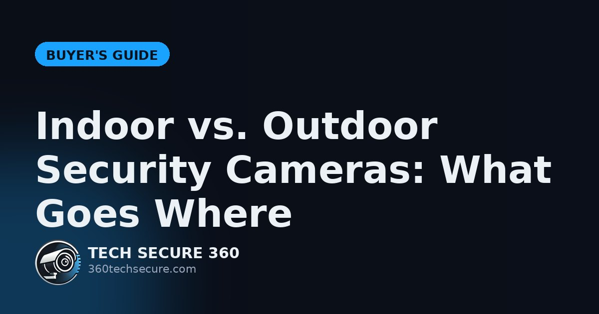
Indoor and outdoor cameras aren't interchangeable. Here's what belongs where.
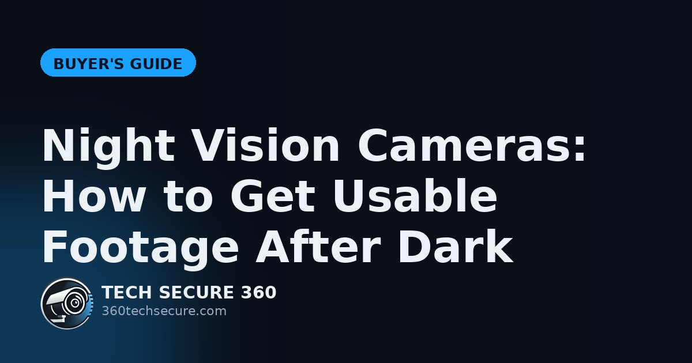
Most incidents happen at night — yet that's when many cameras fail. Here's how to fix it.
They're on every porch now — but are video doorbells actually worth it? An honest take.
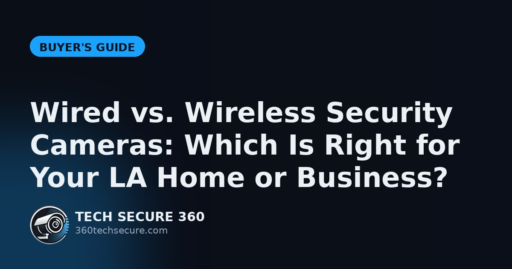
Both have real trade-offs. Here's a plain-English breakdown to help you pick — and when a hybrid setup is best.
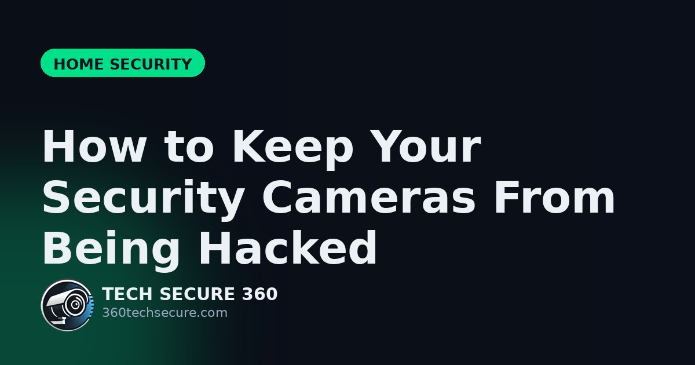
Internet cameras can be hacked when set up carelessly. Here's how to lock yours down.

California has real rules about what you can record — especially audio. Here's the plain-English version.
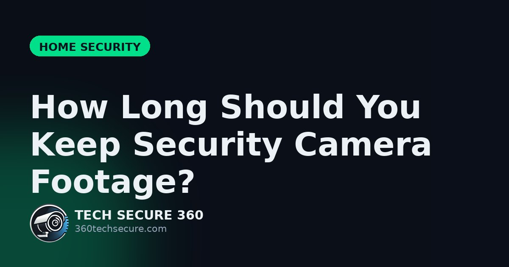
A week? A month? Here's how much footage you actually need to keep — and how to store it.
An empty home is a target. Here's how to keep eyes on it while you're away.
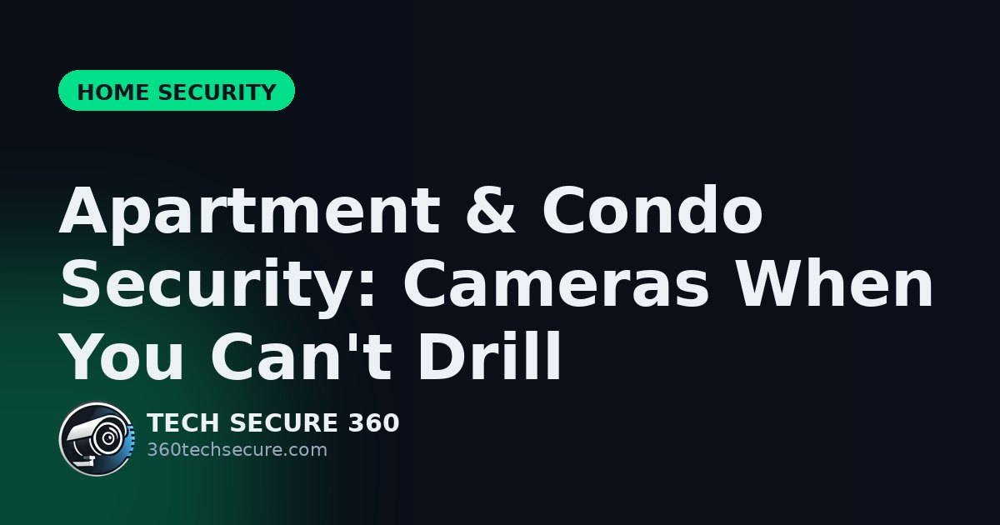
Renting or in a condo? You can still secure your place without drilling a single hole.
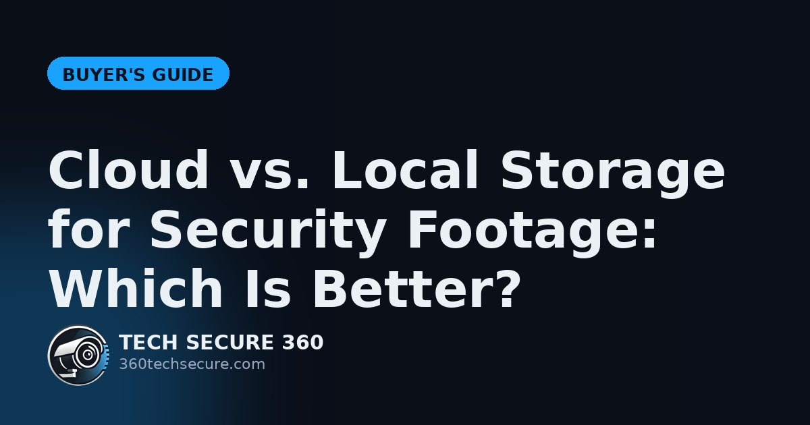
Cloud or local recorder? Each has real trade-offs — and a hybrid often beats both.
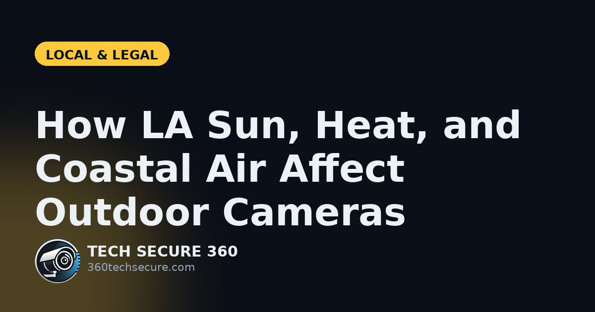
LA's sun, heat, and salt air quietly wreck cheap cameras. Here's how to choose ones that last.
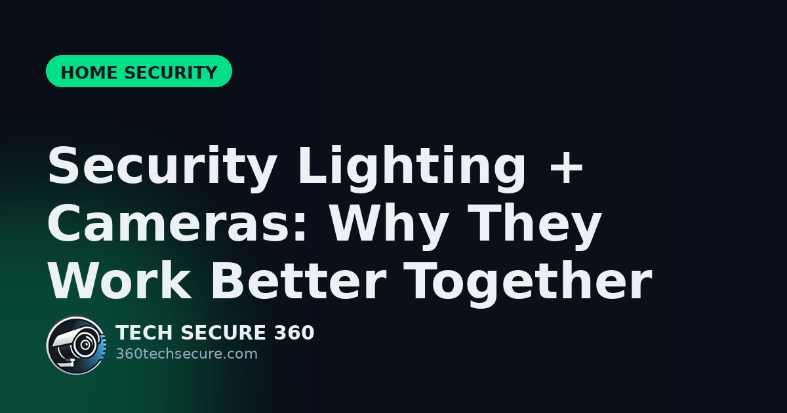
Cameras and lighting aren't an either/or — together they're far stronger.
If the worst happens, here's a calm checklist — and how your footage makes a real difference.
Keys get copied and lost. Here's how access control gives businesses real control over who gets in.
More packages, more travel, more risk. Here's how to keep the holidays merry and theft-free.
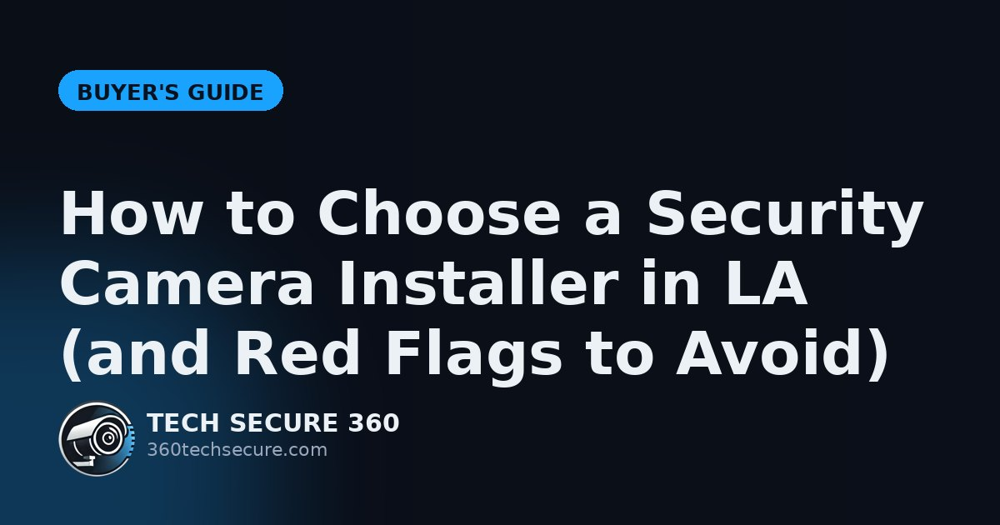
The installer matters as much as the gear. Here's how to pick a good one — and spot a bad one.
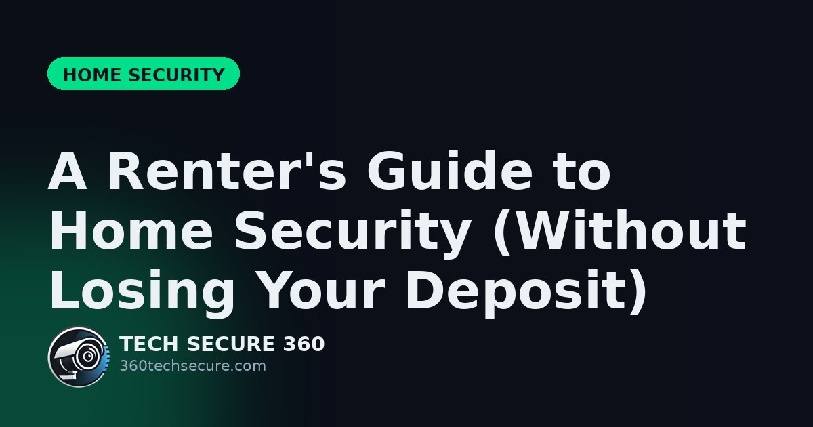
You don't own the place — but you can still secure it without risking your deposit.